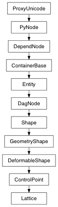

class counterpart of mel function lattice
This command creates a lattice deformer that will deform the selected objects. If the object centered flag is used, the initial lattice will fit around the selected objects. The lattice will be selected when the command is completed. The lattice deformer has an associated base lattice. Only objects which are contained by the base lattice will be deformed by the lattice.
If the default behavior for insertion/appending into/onto the existing chain is not what you want then you can use this flag to force the command to stick the deformer node after the selected node in the chain even if a new geometry shape has to be created in order to do so. Works in create mode (and edit mode if the deformer has no geometry added yet).
Derived from mel command maya.cmds.lattice
The -afterReference flag is used to specify deformer ordering in a hybrid way that choses between -before and -after automatically. If the geometry being deformed is referenced then the -after mode is used when adding the new deformer, otherwise the -before mode is used. The net effect when using -afterReference to build deformer chains is that internal shape nodes in the deformer chain will only appear at reference file boundaries, leading to lightweight deformer networks that may be more amicable to reference swapping.
Derived from mel command maya.cmds.lattice
If the default behavior for insertion/appending into/onto the existing chain is not what you want then you can use this flag to force the command to stick the deformer node before the selected node in the chain even if a new geometry shape has to be created in order to do so. Works in create mode (and edit mode if the deformer has no geometry added yet).
Derived from mel command maya.cmds.lattice
This command is used to specify that the new deformer node should be placed ahead (upstream) of existing deformer and skin nodes in the shape’s history (but not ahead of existing tweak nodes). The input to the deformer will be the upstream shape rather than the visible downstream shape, so the behavior of this flag is the most intuitive if the downstream deformers are in their reset (hasNoEffect) position when the new deformer is added. Works in create mode (and edit mode if the deformer has no geometry added yet).
Derived from mel command maya.cmds.lattice
Returns the name of the deformer tool objects (if any) as string string ...
Derived from mel command maya.cmds.lattice
Get the number of divisions in the lattice
| Return type: | (int, int, int) |
|---|
Derived from api method maya.OpenMayaAnim.MFnLattice.getDivisions
Puts the deformation set in a deform partition.
Derived from mel command maya.cmds.lattice
The base position of the geometries points is fixed at the time this flag is set. When mapping is frozen, moving the geometry with respect to the lattice will not cause the deformation to be recomputed.
Derived from mel command maya.cmds.lattice
The specified object will be added to the list of objects being deformed by this deformer object, unless the -rm flag is also specified. When queried, this flag returns string string string ...
Derived from mel command maya.cmds.lattice
Complements the -geometry flag in query mode. Returns the multi index of each geometry.
Derived from mel command maya.cmds.lattice
Set the number of local lattice slices in x, y, z.
Derived from mel command maya.cmds.lattice
Reset the lattice to match its base position. This will undo any deformations that the lattice is causing. The lattice will only deform points that are enclosed within the lattice’s reset (base) position.
Derived from mel command maya.cmds.lattice
Inserts the new deformer in a parallel chain to any existing deformers in the history of the object. A blendShape is inserted to blend the parallel results together. Works in create mode (and edit mode if the deformer has no geometry added yet).
Derived from mel command maya.cmds.lattice
Returns the point in the lattice that is at the given indices
| Parameters: |
|
|---|---|
| Return type: | Point |
Derived from api method maya.OpenMayaAnim.MFnLattice.point
Removes any points not being deformed by the deformer in its current configuration from the deformer set.
Derived from mel command maya.cmds.lattice
Specifies that objects listed after the -g flag should be removed from this deformer.
Derived from mel command maya.cmds.lattice
Remove any lattice deformations caused by moving lattice points. Translations/rotations and scales on the lattice itself are not removed.
Derived from mel command maya.cmds.lattice
Reset the lattice points to a uniform parallelipiped shape with the specified dimensions: sSize x tSize x uSize
| Parameters: |
|
|---|
Derived from api method maya.OpenMayaAnim.MFnLattice.reset
Undo is not currently supported for this method
Set the number of divisions in the lattice
| Parameters: |
|
|---|
Derived from api method maya.OpenMayaAnim.MFnLattice.setDivisions
The base position of the geometries points is fixed at the time this flag is set. When mapping is frozen, moving the geometry with respect to the lattice will not cause the deformation to be recomputed.
Derived from mel command maya.cmds.lattice
The specified object will be added to the list of objects being deformed by this deformer object, unless the -rm flag is also specified. When queried, this flag returns string string string ...
Derived from mel command maya.cmds.lattice
Set the number of local lattice slices in x, y, z.
Derived from mel command maya.cmds.lattice